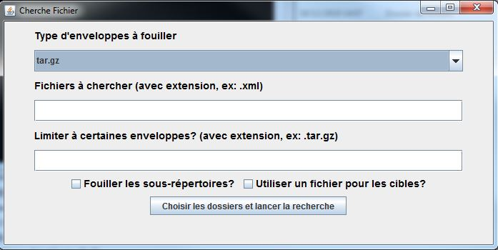
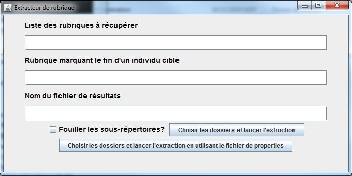
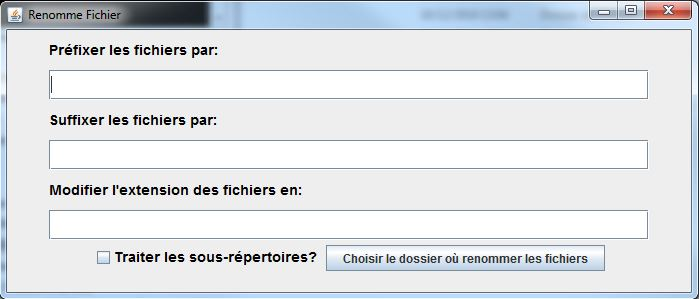
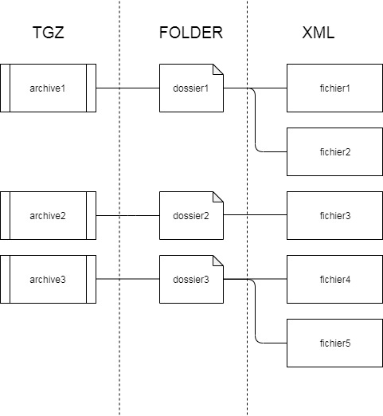
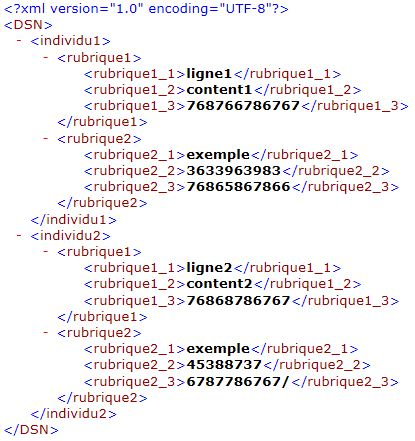

Utilitaires Siera
Chaine PIRENES
DADS -> DSN
Un besoin d'exploration des données
Retour aux fichiers sources
Exploitation des nouvelles variables
Cherche Fichier
Objectif: retrouver des fichiers dans un ensemble d'archives
Extracteur de Rubrique
Objectif: extraire des rubriques de fichiers xml
Renomme Fichier
Objectif: renommer un ensemble de fichiers
schéma de données
Contenu des fichiers
En piste!
Une série d'outils
qui rendent des services simples
mais très utiles
qui sont simples à utiliser
et permettent l'autonomie des utilisateurs métiers
Merci de votre attention
Des questions?